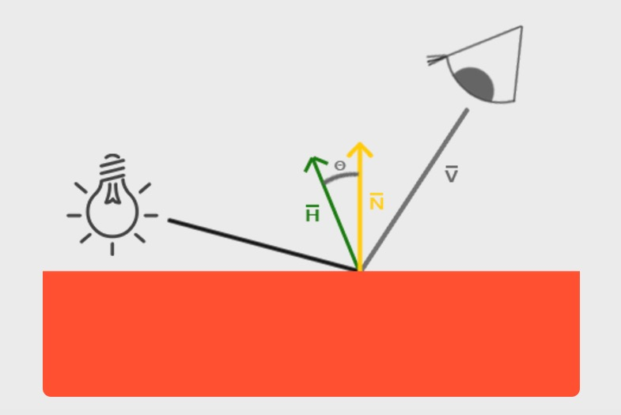

<!DOCTYPE html>
<html>
  <head>
    <title>PBR渲染原理 – Wyman的原创技术博客 – 恭喜你发现我的小站，撩我请加QQ：234707482、Wechat：_Wyman</title>

        <meta charset="utf-8" />
    <meta content='text/html; charset=utf-8' http-equiv='Content-Type'>
    <meta http-equiv='X-UA-Compatible' content='IE=edge'>
    <meta name='viewport' content='width=device-width, initial-scale=1.0, maximum-scale=1.0'>
    <meta name="baidu-site-verification" content="0OpfO1OtHA" />
    
    <meta name="description" content="基于PBR做渲染，需要涉及到很多物理学、几何学、热辐射学概念，本文将逐一介绍每个关键概念，并给出相关重要公式。
" />
    <meta property="og:description" content="基于PBR做渲染，需要涉及到很多物理学、几何学、热辐射学概念，本文将逐一介绍每个关键概念，并给出相关重要公式。
" />
    
    <meta name="author" content="Wyman的原创技术博客" />

    
    <meta property="og:title" content="PBR渲染原理" />
    <meta property="twitter:title" content="PBR渲染原理" />
    

    <!--[if lt IE 9]>
      <script src="http://html5shiv.googlecode.com/svn/trunk/html5.js"></script>
    <![endif]-->

    <link rel="stylesheet" type="text/css" href="/style.css" />
    <link rel="alternate" type="application/rss+xml" title="Wyman的原创技术博客 - 恭喜你发现我的小站，撩我请加QQ：234707482、Wechat：_Wyman" href="/feed.xml" />
    
	<!-- Google Analytics -->
	<script>
		(function(i,s,o,g,r,a,m){i['GoogleAnalyticsObject']=r;i[r]=i[r]||function(){
		(i[r].q=i[r].q||[]).push(arguments)},i[r].l=1*new Date();a=s.createElement(o),
		m=s.getElementsByTagName(o)[0];a.async=1;a.src=g;m.parentNode.insertBefore(a,m)
		})(window,document,'script','//www.google-analytics.com/analytics.js','ga');

		ga('create', 'UA-65954265-1', 'auto');
		ga('send', 'pageview', {
		  'page': '/pbr-rendering/',
		  'title': 'PBR渲染原理'
		});
	</script>
	<!-- End Google Analytics -->
	<!-- Baidu Analytics -->
	<script>
		var _hmt = _hmt || [];
		(function() {
		  var hm = document.createElement("script");
		  hm.src = "//hm.baidu.com/hm.js?0dc968591d8c64196a37eca9ca4f86b3";
		  var s = document.getElementsByTagName("script")[0]; 
		  s.parentNode.insertBefore(hm, s);
		})();
	</script>
	<!-- End Baidu Analytics -->

  </head>

  <body>
    <div class="wrapper-masthead">
      <div class="container">
        <header class="masthead clearfix">
          <a href="/" class="site-avatar"></a>

          <div class="site-info">
            <h1 class="site-name"><a href="/">Wyman的原创技术博客</a></h1>
            <p class="site-description">恭喜你发现我的小站，撩我请加QQ：234707482、Wechat：_Wyman</p>
          </div>

          <nav>
            <a href="/">Blog</a>
            <a href="/about">About</a>
          </nav>
        </header>
      </div>
    </div>

    <nav class="nav2">
      <ul></ul>
    </nav>

    <div id="main" role="main" class="container">
      <section>  
        <script src="https://code.jquery.com/jquery-3.3.0.min.js" integrity="sha256-RTQy8VOmNlT6b2PIRur37p6JEBZUE7o8wPgMvu18MC4=" crossorigin="anonymous"></script>
<script src="/main.js"></script>
<script src='https://cdnjs.cloudflare.com/ajax/libs/mathjax/2.7.4/MathJax.js?config=TeX-MML-AM_CHTML' async></script>
<h1>PBR渲染原理</h1>
 <h3>Tags: <a href="/tag/computer-graphics/" rel="tag">computer graphics</a></h3>
<article class="post">
    
    <div class="entry">
        <p>基于PBR做渲染，需要涉及到很多物理学、几何学、热辐射学概念，本文将逐一介绍每个关键概念，并给出相关重要公式。</p>

<!--more-->

<h2>微平面(microfacets)理论</h2>

<p>微观尺度下的任意一个平面(surface)都可以用多个微小的、完美反射的镜面来描述，这些微小镜面被称为<strong>微平面</strong>。</p>

<h3>粗糙度(roughness)</h3>

<p>平面的<strong>粗糙度</strong>决定了它的各个微平面的镜面反射情况：</p>

<p></p>

<p>粗糙度可以用0.0到1.0来近似。</p>

<h3>中间方向矢量(halfway vector)</h3>

<p>halfway vector(简称h)等于光线方向矢量l加上视角方向矢量v并单位化（即处于l和v的中间）：</p>

<p>\[ \mathbf h = \frac { \mathbf l + \mathbf v}{ \parallel \mathbf l + \mathbf v \parallel } \]</p>

<p></p>

<p>h的特性是：h与平面法线越靠近，那么镜面光越强。</p>

<p>在这个微平面理论下，可以推出：<strong>越多的微平面的法线与h对齐，这个平面的镜面反射就会越强</strong>。</p>

<h2>能量守恒(energy conservation)</h2>

<p>不考虑自发光的平面，所有平面的出射光能量总和不能高于入射光能量总和。</p>

<p>观察下图，可以发现一个规律，粗糙度越高、镜面反射区域越大、镜面反射区域亮度越低。如果反射区域变大，然而亮度不变，那说明能量不守恒了。</p>

<p></p>

<p>在渲染里，简单地说，要做到能量守恒，就是要遵守一个原则：<strong>平面接收到的光能量要么被反射，要么被吸收</strong>，也就是说，吸收和反射，是互斥关系。</p>

<p>直接反射出去的光能量，也叫镜面光、反射光；吸收的光能量，大部分也会变成光发射出去（真正被吸收的就变成热能了），叫漫反射光、折射光。</p>

<p>镜面/反射光、漫反射/折射光的能量可以用2个系数kS、kD控制，两者满足关系式kD + kS = 1、kD &gt; 0、kS &gt; 0，从而确保发射的光能量不超过接收的光能量。</p>

<h2>渲染方程</h2>

<p>渲染方程的详细讨论已经写在<a href="http://www.qiujiawei.com/rendering-equation/">渲染基础理论的介绍</a>一文。</p>

<h2>双向反射分布函数BRDF(Cook-Torrance)</h2>

<p>在<a href="http://www.qiujiawei.com/rendering-equation/">渲染基础理论的介绍</a>一文里，没有详细讨论到的是brdf这个东西。简单地说，brdf是个控制系数，这个系数并不是常量，需要根据平面属性、光线属性计算得到，是个动态属性。基于PBR渲染，关键点就是选择合理的brdf函数。brdf函数将囊括上文提到的各个概念。</p>

<p>brdf很多种，最主流的是cook-Torrance BRDF，其基本框架公式是：</p>

<p>\[ f_{r} = k_{d}f_{lambert} + k_{s}f_{cook−torrance} \]</p>

<p>其中：</p>

<p>\[ f_{lambert} = \frac {c}{\pi } \]</p>

<p>\( f_{lambert} \)被称为lambertian&#39;s reflectance，在我的<a href="https://www.qiujiawei.com/rendering-equation/">渲染基础理论的介绍(1)</a>一文中有详细的推导过程。这里的c是指光源颜色。</p>

<p>右边的部分才是最复杂的：</p>

<p>\[ f_{cook−torrance} = \frac { DFG }{ 4 (\omega _{o} \cdot \mathbf n)(\omega _{i} \cdot \mathbf n) } \]</p>

<p>这条公式怎么来的，改天再写一篇数学推导文。现在需要重点关注右边的分子部分：DFG。DFG其实是3个函数，每个函数算出一个标量因子，3个因子得到后相乘。D、F、G有很多公式可以选择，下面会介绍几个常用的DFG函数。</p>

<h3>D， Normal Distribution Function，法线分布函数</h3>

<p>这个函数其实不是正态分布函数，不要被normal这个单词搞懵了。在渲染一个mesh的一个fragment时，就是在渲染一个平面，这个平面又是由一堆更加小的<strong>微平面</strong>组成。这些微平面有自己的<strong>微法线</strong>，D函数就是用来近似算出究竟有多少微法线和h向量对齐。</p>

<h4>Trowbridge-Reitz GGX</h4>

<p>\[ D(n, h, \alpha ) = \frac { \alpha ^{2} } { \pi ( (n\cdot h)^{2}(\alpha ^{2} - 1) + 1 )^{2} } \]</p>

<p>输入参数：平面法线n、h向量、粗糙度\( \alpha \)。</p>

<p>shader：</p>
<div class="highlight"><pre><code class="language-c" data-lang="c"><span class="kt">float</span> <span class="nf">DistributionGGX</span><span class="p">(</span><span class="n">vec3</span> <span class="n">N</span><span class="p">,</span> <span class="n">vec3</span> <span class="n">H</span><span class="p">,</span> <span class="kt">float</span> <span class="n">a</span><span class="p">)</span>
<span class="p">{</span>
    <span class="kt">float</span> <span class="n">a2</span>     <span class="o">=</span> <span class="n">a</span><span class="o">*</span><span class="n">a</span><span class="p">;</span>
    <span class="kt">float</span> <span class="n">NdotH</span>  <span class="o">=</span> <span class="n">max</span><span class="p">(</span><span class="n">dot</span><span class="p">(</span><span class="n">N</span><span class="p">,</span> <span class="n">H</span><span class="p">),</span> <span class="mi">0</span><span class="p">.</span><span class="mi">0</span><span class="p">);</span>
    <span class="kt">float</span> <span class="n">NdotH2</span> <span class="o">=</span> <span class="n">NdotH</span><span class="o">*</span><span class="n">NdotH</span><span class="p">;</span>

    <span class="kt">float</span> <span class="n">nom</span>    <span class="o">=</span> <span class="n">a2</span><span class="p">;</span>
    <span class="kt">float</span> <span class="n">denom</span>  <span class="o">=</span> <span class="p">(</span><span class="n">NdotH2</span> <span class="o">*</span> <span class="p">(</span><span class="n">a2</span> <span class="o">-</span> <span class="mi">1</span><span class="p">.</span><span class="mi">0</span><span class="p">)</span> <span class="o">+</span> <span class="mi">1</span><span class="p">.</span><span class="mi">0</span><span class="p">);</span>
    <span class="n">denom</span>        <span class="o">=</span> <span class="n">PI</span> <span class="o">*</span> <span class="n">denom</span> <span class="o">*</span> <span class="n">denom</span><span class="p">;</span>

    <span class="k">return</span> <span class="n">nom</span> <span class="o">/</span> <span class="n">denom</span><span class="p">;</span>
<span class="p">}</span>
</code></pre></div>
<h3>F，Fresnel equation，菲涅尔方程</h3>

<p>对于真实的物理材质，光照向量、视角向量不同，平面的反射情况就会不同。F函数能算出不同角度时的反射光情况，也是用一个比值(也叫做平面的真实的反射率）表示。这个比值能反应出有多少百分比的光被反射和被吸收(记住反射和吸收是互斥关系)。</p>

<h4>Fresnel-Schlick approximation</h4>

<p>\[ F_{Schlick}(n, v, F_{0}) = F_{0} + (1 - F_{0})( 1- (n\cdot v))^{5} \]</p>

<p>\( F_{0} \)就是垂直观察平面时的<strong>基本反射率</strong>，一般要用一个vec3表示。注意，这条公式其实只适用于电介质（dielectric），对于金属/导体（metal/conductor）是不适用的。这时就有了些取巧的做法。</p>

<p>一是先预计算出各种常见材质的基本反射率，汇总成一个表，然后需要的时候查表即可。</p>

<p>有了表之后就会发现，对于绝缘体，基本反射率基本都在0.17这个水平线以下，且rgb分量一致；而对于导体，基本反射率都在0.5到1.0之间，且rgb分量值不一致（正是这个不一致性，使得不同的金属有显著的颜色差异，如金、铜、银颜色各异）。</p>

<p>综上,\( F_{0} \)的求取实际上可以做得非常简化，用shader代码可以看出：</p>
<div class="highlight"><pre><code class="language-c" data-lang="c"><span class="n">vec3</span> <span class="n">F0</span> <span class="o">=</span> <span class="n">vec3</span><span class="p">(</span><span class="mi">0</span><span class="p">.</span><span class="mo">04</span><span class="p">);</span> 
<span class="n">F0</span> <span class="o">=</span> <span class="n">mix</span><span class="p">(</span><span class="n">F0</span><span class="p">,</span> <span class="n">surfaceColor</span><span class="p">.</span><span class="n">rgb</span><span class="p">,</span> <span class="n">metalness</span><span class="p">);</span> 
</code></pre></div>
<p>第一行是绝缘体基本反射率，0.04是统计了大部分绝缘体的基本反射率并取平均值得到。</p>

<p>第二行使用了一个新的参数叫金属性metalness，这是个十分人为的控制变量，范围为0.0到1.0；surfaceColor就是反射颜色值，例如黄金反射颜色为(1.00, 0.71, 0.29)。然后就可以使用mix函数和metalness做插值，metalness越接近0，那么就越接近绝缘体，metalness越接近1，那么就越接近surfaceColor。</p>

<p>有了\( F_{0} \)后，就可以代入到菲涅尔方程做运算了：</p>
<div class="highlight"><pre><code class="language-c" data-lang="c">
<span class="n">vec3</span> <span class="nf">fresnelSchlick</span><span class="p">(</span><span class="n">vec3</span> <span class="n">n</span><span class="p">,</span> <span class="n">vec3</span> <span class="n">v</span><span class="p">,</span> <span class="n">vec3</span> <span class="n">F0</span><span class="p">)</span>
<span class="p">{</span>
    <span class="k">return</span> <span class="n">F0</span> <span class="o">+</span> <span class="p">(</span><span class="mi">1</span><span class="p">.</span><span class="mi">0</span> <span class="o">-</span> <span class="n">F0</span><span class="p">)</span> <span class="o">*</span> <span class="n">pow</span><span class="p">(</span><span class="mi">1</span><span class="p">.</span><span class="mi">0</span> <span class="o">-</span> <span class="n">dot</span><span class="p">(</span><span class="n">n</span><span class="p">,</span> <span class="n">v</span><span class="p">),</span> <span class="mi">5</span><span class="p">.</span><span class="mi">0</span><span class="p">);</span>
<span class="p">}</span>
</code></pre></div>
<h3>G，Geometry function，几何属性函数</h3>

<p>微平面的起伏不定，导致微平面之间产生了自阴影（self-shadowing）。G函数模拟计算的就是这个事情. 粗糙度越高，自阴影越多，反射出去的光就越少。G函数输出的是一个比值，0.0表示百分百自阴影（全黑掉），1.0表示没有任何自阴影（全白）。</p>

<h4>Smith&#39;s Schlick-GGX</h4>

<p>\[ G(n, v, k) = \frac { n\cdot v }{ (n\cdot v)(1 - k) + k } \]</p>

<p>输入参数：平面法线n、视角向量v、粗糙度\( \alpha \)的重新映射k。</p>

<p>k的公式要看情况做选择，例如对于方向光，有:</p>

<p>\[ k = \frac { (\alpha + 1)^{2} }{ 8 } \]</p>

<p>为了更加地近似模拟平面几何属性，可以再应用一条公式（Smith&#39;s method）:</p>

<p>\[ G&#39;(n,v,l,k) = G(n,v,k)G(n,l,k) \]</p>

<p>Smith&#39;s method同时处理掉了微平面的高低起伏导致的对光线、对视角的障碍问题，如下图。图中左边，视角向量（红色）的路线上有一个微平面突起，导致接收不到左边的光线的反射，这种情况叫<strong>几何障碍（geometry obstruction）</strong>；图中右边，光线到达微平面后又反射到另一个微平面上（能量衰减了），没有直接反射到眼睛，这种情况叫<strong>几何遮蔽（geometry shadowing）</strong>。</p>

<p></p>

<p>shader：</p>
<div class="highlight"><pre><code class="language-c" data-lang="c"><span class="kt">float</span> <span class="nf">GeometrySchlickGGX</span><span class="p">(</span><span class="kt">float</span> <span class="n">NdotV</span><span class="p">,</span> <span class="kt">float</span> <span class="n">k</span><span class="p">)</span>
<span class="p">{</span>
    <span class="kt">float</span> <span class="n">nom</span>   <span class="o">=</span> <span class="n">NdotV</span><span class="p">;</span>
    <span class="kt">float</span> <span class="n">denom</span> <span class="o">=</span> <span class="n">NdotV</span> <span class="o">*</span> <span class="p">(</span><span class="mi">1</span><span class="p">.</span><span class="mi">0</span> <span class="o">-</span> <span class="n">k</span><span class="p">)</span> <span class="o">+</span> <span class="n">k</span><span class="p">;</span>

    <span class="k">return</span> <span class="n">nom</span> <span class="o">/</span> <span class="n">denom</span><span class="p">;</span>
<span class="p">}</span>

<span class="kt">float</span> <span class="nf">GeometrySmith</span><span class="p">(</span><span class="n">vec3</span> <span class="n">N</span><span class="p">,</span> <span class="n">vec3</span> <span class="n">V</span><span class="p">,</span> <span class="n">vec3</span> <span class="n">L</span><span class="p">,</span> <span class="kt">float</span> <span class="n">k</span><span class="p">)</span>
<span class="p">{</span>
    <span class="kt">float</span> <span class="n">NdotV</span> <span class="o">=</span> <span class="n">max</span><span class="p">(</span><span class="n">dot</span><span class="p">(</span><span class="n">N</span><span class="p">,</span> <span class="n">V</span><span class="p">),</span> <span class="mi">0</span><span class="p">.</span><span class="mi">0</span><span class="p">);</span>
    <span class="kt">float</span> <span class="n">NdotL</span> <span class="o">=</span> <span class="n">max</span><span class="p">(</span><span class="n">dot</span><span class="p">(</span><span class="n">N</span><span class="p">,</span> <span class="n">L</span><span class="p">),</span> <span class="mi">0</span><span class="p">.</span><span class="mi">0</span><span class="p">);</span>
    <span class="kt">float</span> <span class="n">ggx1</span> <span class="o">=</span> <span class="n">GeometrySchlickGGX</span><span class="p">(</span><span class="n">NdotV</span><span class="p">,</span> <span class="n">k</span><span class="p">);</span>
    <span class="kt">float</span> <span class="n">ggx2</span> <span class="o">=</span> <span class="n">GeometrySchlickGGX</span><span class="p">(</span><span class="n">NdotL</span><span class="p">,</span> <span class="n">k</span><span class="p">);</span>

    <span class="k">return</span> <span class="n">ggx1</span> <span class="o">*</span> <span class="n">ggx2</span><span class="p">;</span>
<span class="p">}</span>
</code></pre></div>
<h2>Cook-Torrance reflectance equation</h2>

<p>有了brdf函数后，之前的渲染方程就可以变成：</p>

<p>\[ L_{o}(p, \omega _{o}) = L_{e}(p, \omega _{o})  + \int _{\Omega } (k_{d}\frac {c}{\pi } + k_{s}\frac { DFG }{ 4 (\omega _{o} \cdot \mathbf n)(\omega _{i} \cdot \mathbf n) } ) L_{i}(p, \omega _{i}) |cos \theta _{i}|d\omega _{i} \]</p>

<p><a href="http://www.codinglabs.net/article_physically_based_rendering_cook_torrance.aspx">http://www.codinglabs.net/article_physically_based_rendering_cook_torrance.aspx</a></p>

<p><a href="http://www.codinglabs.net/article_physically_based_rendering.aspx">http://www.codinglabs.net/article_physically_based_rendering.aspx</a></p>

    </div>
    <div class="entry">
        (未经授权禁止转载)
    </div>
    <div class="date">
        Written on September 23, 2017
    </div>
    <p>博主将十分感谢对本文章的任意金额的打赏^_^</p>
    
    
    
    
<div class="comments">
	<div id="disqus_thread"></div>
	<script type="text/javascript">

	    var disqus_shortname = 'qiujiawei';

	    (function() {
	        var dsq = document.createElement('script'); dsq.type = 'text/javascript'; dsq.async = true;
	        dsq.src = '//' + disqus_shortname + '.disqus.com/embed.js';
	        (document.getElementsByTagName('head')[0] || document.getElementsByTagName('body')[0]).appendChild(dsq);
	    })();

	</script>
	<noscript>Please enable JavaScript to view the <a href="http://disqus.com/?ref_noscript">comments powered by Disqus.</a></noscript>
</div>

</article>


      </section>
    </div>

    <div class="wrapper-footer">
      <div class="container">
        <footer class="footer">
          
<a href="mailto:voyagingmk@gmail.com"><i class="svg-icon email"></i></a>


<a href="http://github.com/barryclark/jekyll-now"><i class="svg-icon github"></i></a>


<a href="http://twitter.com/voyagingmk"><i class="svg-icon twitter"></i></a>


        </footer>
      </div>
    </div>

  </body>
</html>
